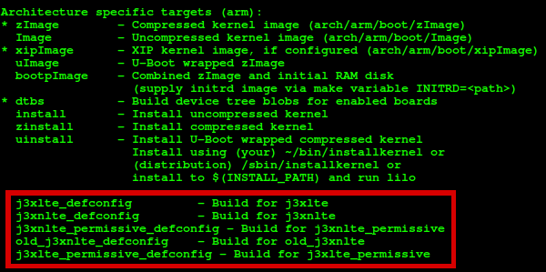
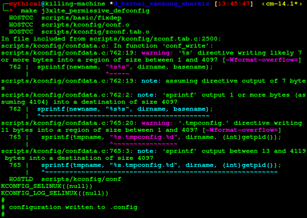
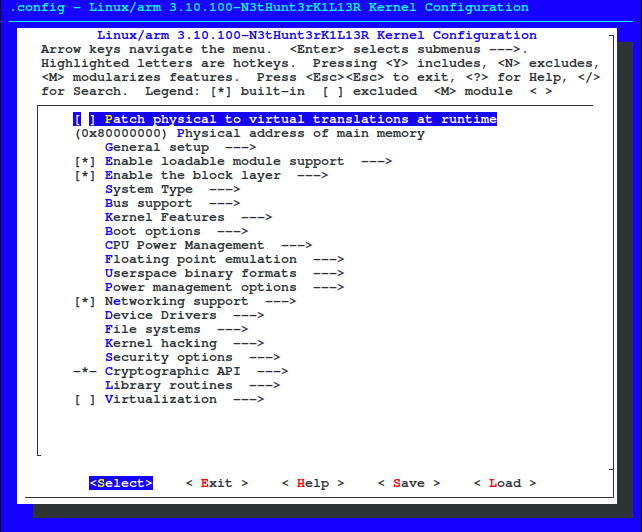

How to build a Kernel for fully ANDRAX usage?
A modded Kernel is NOT needed for ANDRAX use, 99,9% of attacks never will need a custom Kernel but for somethings is useful a Kernel with more features that a normal Android Kernel.
The Problem here is that manufactures uses different hardwares and chipsets for any smartphone model so is impossible create a 100% accurate tutorial but ANDRAX users are Advanced users by default so a Kernel build is pretty simple for them
What you need to build a Kernel?
- A Linux machine
- Knowledge in compilation (C/C++ Coders)
- Knowledge in Linux shell (Basic Linux)
- Knowledge in Android development (ROM Modding, Porting)
- A CROSS Compiler
- Your device tree
Download the right Compiler
To build a Kernel for Android you need the right compiler, if your device is ARM (armv7l) you will use the ARM-EABI-4.8 if your device is ARMv8 or AARCH64 you will use AARCH64-LINUX-ANDROID-4.9
The device tree
The device tree is extremely necessary to complete the process of build the Kernel, in many cases some drivers are only found in device tree, every device has a specific type of tree and a lot of things changed in the "system as root" partition type in the newer Android versions, read more about system as root here
Check All Drivers
The most common cause of "bootloop" is not include or compile all needed drivers in ramdisk or builtin space
Exporting
Every device has a better way to make the Kernel, you will need check your device Kernel source for complete instructions (generally in github) but some steps are made by default, and one of these steps are the exporting phase.
You will need export some variables in the terminal that you will compile your Kernel.
export ARCH=arm
export SUBARCH=arm
export CROSS_COMPILE=/home/mythical/toolchain/arm-eabi-4.8/bin/arm-eabi-
The above is the example of configuration if your device is ARM (armv7l), the below example is to use if your device is ARMv8 (aarch64)
export ARCH=arm64
export SUBARCH=arm64
export CROSS_COMPILE=/home/mythical/toolchain64/bin/aarch64-linux-android-
Change the Cross Compile PATH
Make sure that you are using the right path of your extracted your toolchain, don't be dumb like Kali users!
Using the defconfig
All the Kernel sources will have one or more defconfig these files are located at: /kernel-source-path/arch/your arch/configs but you will be able to see your defconfig options using the command: make help

In my case i'll use the j3xlte_permissive_defconfig which is the best one for me, make sure that you will use the right defconfig for your device, now we need type this in the terminal: make your_defconfig

Ok, now our base .config for the Kernel has been created, now we will customize it, to do that we will type: make menuconfig and we will get a pseudo terminal interface to we work

Now is time to customize it, follow the next pages of this topic to the instructions about the categories of customizations